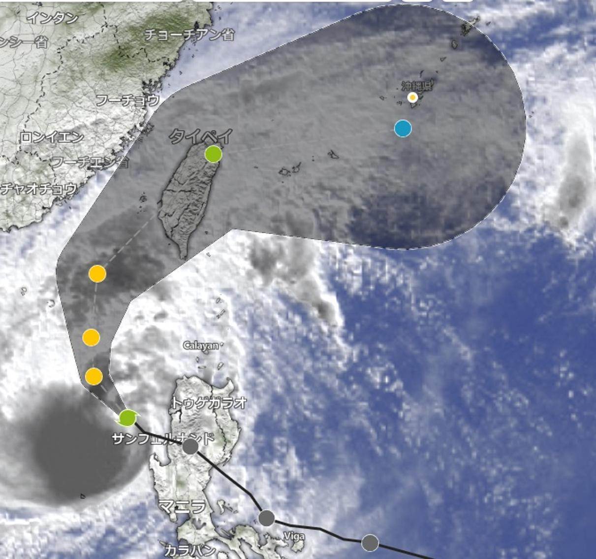

うるがいの話 ある日
最新: 国土交通省ＯＤ調査【うるがいの話 ある日】とは 一日だけのプログです
『うるがいの話』の最新一日だけのプログで、通信料が少なく経済的だ。カニの画像をクリックすると全ての日付が載る『うるがいの話』サイトを表示します
|
|
【うるがいの話】 うるがい(ｳﾙｶﾞｲ urugai)とは、『もずくがに』の名前でとても大きくなります。 |
|---|---|
|
|
【カミマヤーの話】 猫のことを方言でマヤーといいます。カミマヤー（kamimayaa）とは、神の猫のことです。 |
|
【たながぁの音楽】 たながぁ（ﾀﾅｶﾞｰ tanagaa）とは手長えびのことで、何種類かあり大きいのは車 エビぐらいになります。 |

|
【ぶながぁの話】 ぶながぁ(ﾌﾞﾅｶﾞｰ bunagaa)とは、赤い髪の毛、赤い身体、そして身長は１ｍ２０ｃｍ ぐらい、川の蟹を食べているの目撃された。場所は沖縄県国頭郡大宜味村のと ある村僕の隣近所に住んでいる爺さんから、聞いた話です。 |
|
|
【ギーマの話】 ギーマ(giima)とは、山原の里山に咲くスズランに似た、 花を付けます。実は食べられます、 気が付くと口の周りが紫になっています。 |
2025年11月10日 (月）国土交通省ＯＤ調査
15:51
抽選で選ばれたようだ。ネットで回答をしてみた、あれー、結構
難儀なのである。きのうの休日の１１月９日の回答、県立図書館
までの移動情報を、入力するのだが。で、次は普通の日だが、明
日の１１月１１日（火）を入力しなければいけない。入力したデ
ータを保存して、ログアウトした。
英語のラダーシリーズ、アガサ・クリスティーの『ナイルに死す
』を読み終えました。あれ！、いつこの人が死んだのだろう？、
犯人の動機は？、理解度６割（優、良、可、不可でいれば可）。
大学生一般教養の第二外国語であるドイツ語の長文読解の試験を
思い出す。笑える回答で、全然違っていたけど成績は良だったこ
とを思い出す。さて、図書館から翻訳バージョンの『ナイルに死
す』を借りようかと思ったが、殺人ものなので止めた。
朝早く、ヨメの妹を『天久台病院』へ連れていく。大学時代に姉
を連れていったが、建物が全然変わって！いた。その後、達磨寺
へ行ったのだが、観光客が多くて平日なのに駐車場が一杯。なん
とか、停めたら、後ろの軽自動車の運転手が来た、車を出せませ
ん！。あは、車を異動させ、軽自動車が出ていった後に停める。
お祈り終え、駐車場に戻り遅れているヨメ待つ、すると軽自動車
が駐車場へ、停めらない。暫くすると、男性の運転手が『出ます
か？』と言う。出ますよ、ただ人を待っていますと回答、ほどな
くヨメが戻り、車をだす。男性は、片言の日本語だった。
予報では台風２６号は、台北を経由し沖縄本島へ向かう
